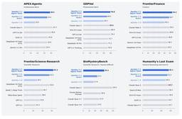

テクノエッジ TechnoEdge
https://www.techno-edge.net/
テックメディア TechnoEdge (テクノエッジ)公式サイトです。サイエンスから最新ガジェット、サービスやコンテンツまで、最前線のニュースとレビュー、コラムをお届けします。
フィード
Meta、開発中のヘッドセット「Project Phoenix」とみられる画像が流出。メガネ風の薄型デザイン 1
1
テクノエッジ TechnoEdge
Metaが開発中と言われている、「Project Phoenix」と呼ばれる次世代ヘッドセット製品らしき画像が、同社のHorizon OSアプリ内から発見されました。
1日前
ベルキンからノート向け大出力モバイルバッテリー、MacBook Pro 16も急速充電の単ポート140W対応
テクノエッジ TechnoEdge
ベルキンがノートPCの急速充電にも対応する大出力・大容量モバイルバッテリー「UltraCharge Pro」シリーズ2機種を発売しました。
2日前

写真から実物と区別つかないレベルの3D人体モデルを作り、リグ入れてリアルタイム対話させるまで。ChatGPTとClaudeのコラボで開発した（CloseBox） 42
テクノエッジ TechnoEdge
写真からフォトリアリスティックな人体モデルを生成する話は以前から何度かしておりますが、ひさしぶりに触ってみたところ、ほぼ写真と区別がつかないレベルまで到達したのではないかと実感するに至りました。
2日前

トランプスマホ「T1」が従来比1.5倍にサイレント値上げ。iPhone 17eより高額に 4
テクノエッジ TechnoEdge
トランプ米大統領が所有するトランプ・オーガニゼーション傘下のMVNO事業者トランプ・モバイルは、同社が販売する金色のスマートフォン「T1」の価格を、499ドル（約7万7000円）から749ドル（約12万3000円）に引き上げました。従来比約1.5倍の大幅値上げとなります。
2日前
Switch 2更新でTVモードVRR対応。MiiのQRコード共有と懐かしの曲、Switch 2間の転送など新機能・改良多数
テクノエッジ TechnoEdge
任天堂がNintendo Switch 2の本体更新バージョン23.0.0を配信しました。
2日前

8K360度ドローンAntigravity A1が5万円引きの夏セールまもなく終了 空に「居る」プレゼンス感覚を共有できる直感操作が魅力
テクノエッジ TechnoEdge
360度カメラドローン Antigravity A1が最大25%オフで購入できる夏セールは、まもなく9月11日(金)で終了します。
3日前

小島秀夫新作『PHYSINT』協業をソニーが中止、XBOXで開発継続へ 『キャンセルするという通達が突然届きました』 248
テクノエッジ TechnoEdge
『メタルギア』シリーズや『デス・ストランディング』で知られるゲームデザイナー小島監督の新作『PHYSINT』が、共同発表したソニーからパートナーシップを断たれ、新たにマイクロソフトXBOXとの協業で開発を継続することが分かりました。
3日前

5分で分かるApple発表まとめ：初折りたたみ iPhone Duo・可変絞り18 Pro・新Watch S12 / Ultra・AirPods 5 1
テクノエッジ TechnoEdge
iPhone初の折りたたみモデル『iPhone Duo』など、9月10日のイベントでAppleが発表した新製品をまとめます。
3日前

しばらく先行レビューしていたAppleのフォルダブルDuoについて語らせてくれ（CloseBox） 53
テクノエッジ TechnoEdge
Appleの新しいCEOが発表する新製品を出したそうですね。Duoとかいうフォルダブル。二つ折りの携帯端末。筆者も持ってます。
3日前

iPhone 16 / 17 / Airまた値上げ、2か月前より約3万円～アップ 新型の陰でサイレント価格改定 2
テクノエッジ TechnoEdge
初の折りたたみモデル iPhone Duo、可変絞りを搭載した iPhone 18 Pro 発表する一方で、Appleは既存のiPhone 16 / 17 / 17e / Air をサイレント値上げしています。
3日前

折りたたみ iPhone Duoは36万4800円から。カメラ穴なし「白銀比」大画面で独自UI採用とペン対応、最速A20 Proチップ採用 2
テクノエッジ TechnoEdge
Appleが初の折りたたみiPhone、『iPhone Duo』を発表しました。
3日前

Apple Watch Series 12／Ultra 4 発表。S11チップ、「ウェアラブル史上最高精度心拍数センサー」搭載 1
テクノエッジ TechnoEdge
アップルはスマートウォッチ新製品 Apple Watch Series 12およびApple Watch Ultra 4を発表しました。
3日前

アップル新イヤホン AirPods 5 発表。「業界最高クラス」の解放型ANC搭載、税込2万3800円から 3
テクノエッジ TechnoEdge
アップルは、9月10日午前2時から行われた新型iPhone発表イベントで「業界最高のアクティブノイズキャンセリング（ANC）」を搭載するとうたう新型完全ワイヤレスイヤホン AirPods 5 を発表しました。
3日前
iPhone 18 Pro／18 Pro Max発表、カメラに可変絞り搭載、A20 ProチップでAIもゲームも軽快 1
テクノエッジ TechnoEdge
アップルが、iPhone 18 ProとiPhone 18 Pro Maxを発表しました。9月18日発売で、価格はiPhone 18 Proが1199ドルから、iPhone 18 Pro Maxは1299ドルから。9月12日から予約受け付けを開始します。
3日前

Switch 2 ゼルダの伝説 40周年エディションは6万2980円、初の特別モデル。Proコンはディスプレイスタンドつき
テクノエッジ TechnoEdge
配信番組『ゼルダの伝説 40周年 Direct』で、任天堂がSwitch 2初の特別デザインモデル『Nintendo Switch 2 （日本語・国内専用） ゼルダの伝説 40周年 アニバーサリーエディション』と、Proコントローラー、キャリングケースを発表しました。
4日前

Meta、パーソナルAIエージェント「Muse」発表。ユーザーの日常タスクを自律的に支援、セキュリティやプライバシーも考慮した設計うたう 27
テクノエッジ TechnoEdge
Metaは、米国のユーザー向けに新しいパーソナルAIエージェント「Muse」を発しました。Metaが独自に開発したAIモデル「Muse Spark」を採用し、ウェブブラウジングやファイル操作、フォームへの入力、購入手続きといった幅広いタスクをバックグラウンドで自律的に実行します。
4日前
ロジからAIコントローラ『MX Keypad』発売。CodexやClaude Codeを液晶キーで操作、GitHubとネイティブ統合 2
テクノエッジ TechnoEdge
Logitechが複数のAIコーディングツールやIDEをまたいで操作できる開発者向けキーパッド「MX Keypad」を発表しました。価格は99.99ドル（99.99ユーロ）。グラファイトとペールグレーの2色を用意し、一部の市場ではすでに販売中です。
4日前
Xiaomiのライカスマホ Leitzphoneが200台限定で最終入荷、価格は据え置き 2万円相当のフォトグラフィーキット特典付属
テクノエッジ TechnoEdge
シャオミ・ジャパンは9月7日、ライカとの協業スマートフォン「Leica Leitzphone powered by Xiaomi」の予約受け付けを再開しました。
5日前

即完売のSteamコントローラーが再入荷、1万7800円 トラックパッド・背面ボタン・グリップセンサー完備で全Steamゲーム対応
テクノエッジ TechnoEdge
入荷即完売を続ける新Steam Controllerが日本向け販売店 KOMODOで再入荷しました。1人一点限り、1万7800円で購入できます。
5日前
GPT-6 Astraが3Dパズルゲーム『Portal』を24時間でクリア。消費トークンは約571ドル分 1
テクノエッジ TechnoEdge
OpenAIの最新大規模言語モデル「GPT-6 Astra」が、Valveの3Dパズルゲーム「Portal」を人間の操作なしに自律的にクリアしました。これはAI・LLMエンスージアストのCozyBlaze氏が行った実験の結果で、実行には約24時間を要し、API利用料は571.18ドルに達しました。
5日前

AIを「社内一の怠け者だけど優秀なベテランエンジニア」に変えるツール「ポニーテール」が生成コードを最大94%削減する（生成AIクローズアップ） 236
テクノエッジ TechnoEdge
今回は、AIエージェントを社内で一番怠惰だけど優秀なベテランエンジニアのように変身させる拡張ツール「ponytail」（ポニーテール）を取り上げます。50行のコードを見せると、何も言わずにたった1行に置き換えてしまう手抜き上手なエンジニアというイメージです。
6日前
アップルがゲームコントローラーを開発中か。macOS 26.7 RC版から2機種のコード発見 1
テクノエッジ TechnoEdge
macOS 26.7の最初のリリース候補版（RC）から、アップルが純正のゲームコントローラーの開発を行っている可能性を示すコードが発見されました。
6日前
XREAL 1Sが整備品セール、Bランク3万6980円から。通常6万7980円の最新世代主力モデル
テクノエッジ TechnoEdge
XREALが主力モデル XREAL 1S のリユース販売を開始しました。台数限定・期間限定で、売り切れ時点で終了します。
7日前
4分半かかっていたAI動画が79秒に。MiniMax H3をRTX 5090で3週間かけて速くした全記録（CloseBox） 6
テクノエッジ TechnoEdge
RTX 5090 1枚のローカル動画生成。半分は拾い物、半分は自分たちで見つけた高速化の記録です。
7日前

中国AI勢が怒涛のリリース、Z.ai開発の「GLM-5.3-Flash」、アリババ開発の「Qwen3.8-Flash-Next」、テンセント開発の「Hy4 preview」など生成AI技術5つを解説（生成AIウィークリー） 7
テクノエッジ TechnoEdge
今回の「生成AIウィークリー」（第158回）は、最初から最後まで実務プロセスを行う研究支援AI「Apodex 1.1」や、次世代モデル「Qwen4」を先行搭載したオープンウェイトAI「Qwen3.8-Flash-Next」を取り上げます。
7日前

新SNS「Twitter.now」が「Tweet.app」に改名。商標権めぐる暫定判決でXに有利な判定 57
テクノエッジ TechnoEdge
米デラウェア州連邦裁判所は、元Twitterであるイーロン・マスク氏のXが、スタートアップ企業Operation Bluebirdに対して申し立てていたTwitter商標権に関する仮差し止め訴訟で、「Twitter」の名称は現在もXが商標権を有しているとの暫定的な判断を示しました。
8日前

任天堂『ゼルダの伝説40周年ダイレクト』とニンテンドーダイレクトを9月8日・9日連続配信
テクノエッジ TechnoEdge
任天堂が次のニンテンドーダイレクトを発表しました。9月8日(火)23時からの『ゼルダの伝説40周年 Direct 2026.9.8』を、翌9月9日(水)23時には『Nintendo Direct 2026.9.9』を、2日連続で配信します。
8日前

血圧が測れるスマートウォッチHUAWEI WATCH D3発表 さらに薄く軽く、運動前後の計測にも対応
テクノエッジ TechnoEdge
ファーウェイが血圧計を備えたスマートウォッチの新モデル「HUAWEI WATCH D3」を発表しました。
9日前
避暑地で新しいPixelたちといっしょ。Pixel 11 Pro/Pro Fold & Pixel Watch 5とGemini Intelligenceのコンビっぷり（Google Tales）
テクノエッジ TechnoEdge
Googleがフラグシップの発表イベントを秋から真夏（8月）へと前倒ししたのは2024年の「Pixel 9」シリーズからでした。あれからすっかり定着し、8月に出る新モデルをお借りしては、そのまま夏の避暑旅行に連れ出してあれこれ試すというのが毎年のルーティンになっております。
9日前
Xbox Cloud Gamingが時間制限を導入。Ultimate加入者でも月15時間まで、追加は有料
テクノエッジ TechnoEdge
マイクロソフトが、これまでXbox Game Pass加入者に時間無制限で提供していたXbox Cloud Gamingに、月間利用時間の上限を設けると発表しました。
9日前
NVIDIA、Hugging Faceの買収発表。約2兆円、ハードとソフト両面でAI分野の支配力強化
テクノエッジ TechnoEdge
NVIDIAがAIモデル共有プラットフォームのHugging Faceを約129億3000万ドル（約2兆110億円）で買収すると発表しました。
9日前
ClaudeにSalesforceを統合した「Claudeforce」、AnthropicとSalesforceが発表。Claudeから営業データ分析や顧客対応
テクノエッジ TechnoEdge
SalesforceとAnthropicが「Claudeforce」を発表しました。
10日前
Macアプリ開発者に「インテル対応終了可能」通知。Appleシリコン未対応には「すぐ移行開始」呼びかけも
テクノエッジ TechnoEdge
Appleは2026年9月2日、Mac App Storeに登録するアプリ開発者に対し、インテルMacへの対応を終了可能になったことを告知しました。
10日前
バッファロー初のトラックボール試用ミニレビュー。しっくりサイズに高速ホイール搭載で早割5990円、ボタンは静音仕様
テクノエッジ TechnoEdge
バッファローが現行製品で初となるトラックボールBSTBB700を発売しました。
11日前
ゲームソフトのパッケージ版販売終了問題をきっかけに、今の12cm光ディスクがいつまで持ちこたえられるか考えてみる（西川善司のバビンチョなテクノコラム）
テクノエッジ TechnoEdge
1990年代から、空気のような扱いをされながらも、確実に進化を遂げてきた12cm光ディスクメディアの現状がどのような状況なのかを把握しよう。
11日前
農業AIアシスタント「JD」発表。農業機械からの各種データ分析・意思決定を支援
テクノエッジ TechnoEdge
世界最大の農業機械ブランド、ジョンディア（John Deere）は、同社の農業向け管理プラットフォーム「Operations Center」にAIアシスタント「JD」を統合すると発表しました。
11日前
日本初の宇宙飛行士 秋山豊寛氏が死去 人類初の宇宙ジャーナリスト・商業宇宙飛行者
テクノエッジ TechnoEdge
元TBS記者で、日本人初の宇宙飛行士として知られる秋山豊寛氏が亡くなりました。秋山氏は1942年東京府(現・東京都)生まれ。84歳でした。
11日前
Claude Fable 5.1提供開始 セーフガード誤介入が大幅減、性能向上で半額以下のタスクも。「AIが科学の進歩に貢献する未来の先駆け」
テクノエッジ TechnoEdge
Anthropicが新たなAIモデル「Claude Fable 5.1」の提供を開始しました。サイバーセキュリティ等の制限を緩和した上位版「Claude Mythos 5.1」も一部のバートナーに提供します。
11日前
ダイソン、AIとカメラ搭載の電動歯ブラシ「CameraJet」発表、歯間をAIで検知して自動フロス
テクノエッジ TechnoEdge
ダイソンはカメラとAIを電動歯ブラシに組み合わせた製品「Dyson CameraJet」を発表しました。ユーザーの歯間を精密に検知して、そこへマウスリンスを精密噴射する機能により、ブラッシングと同時にフロスし、歯垢の蓄積を防げると説明しています。
11日前
玄人志向が『Crowxis』(クロウシス)へ、四半世紀経て改名 八咫烏と「確かな選択の軸」から
テクノエッジ TechnoEdge
自作PC向けブランドとして四半世紀にわたり親しまれた「玄人志向」が、新ブランド「Crowxis（クロウシス）」に改名しました。
12日前
ベルキンから「1年使っても100%容量」モバイルバッテリー、ケーブル・残量表示つきでPD45W出力対応
テクノエッジ TechnoEdge
ベルキンがモバイルバッテリーの新製品「UltraCharge ケーブル内蔵 ディスプレイ付きモバイルバッテリー」を発表しました。ラインナップは10000mAhモデルと20000mAhモデル。
12日前
Mac Studio、「PCIe Gen 6」対応の記述が発表リリース文からいつの間にか削除
テクノエッジ TechnoEdge
アップルは先週、Mac miniおよびMac Studioをサプライズ発表しました。ただ現在、Mac Studioのプレスリリースからは、いつのまにか内蔵SSDの「PCe Gen 6」対応に関する記述が消えてしまっていることが明らかになっています。
12日前
ビートルズに始まり、バッハ、サティ、モーツァルトまで。「無限音楽機関」はどこまで来たのか、YouTube番組で話してきました（CloseBox）
テクノエッジ TechnoEdge
無限音楽機関というのは、筆者が Claudeと一緒に作っている、音楽を無限に生成し続けるブラウザアプリ群の総称です。7月から取り組んできたことと現在地をまとめておきます。
12日前
EU、ChatGPTを「超大規模検索エンジン」に指定。RedditやRobloxも新たに規制強化対象へ
テクノエッジ TechnoEdge
EUの「内閣」にあたる行政執行機関の欧州委員会は、OpenAIのAIチャットボット「ChatGPT」を、デジタルサービス法（DSA）における「超大規模オンライン検索エンジン」に指定したと発表しました。
12日前
梶裕貴MCの『State of Play日本』再び。9月3日(木)22時から通常のPS5新作情報『State of Play』と連続配信
テクノエッジ TechnoEdge
ソニー・インタラクティブエンタテインメント(SIE)は9月3日(木)22時から、オンライン番組『State of Play』と、続けて『State of Play 日本』を配信します。
12日前
なのにあなたはKindleで買うの？ Google Play Booksで買った本をGemini Notebookにぶち込めてAI対話できる新機能登場（生成AIクローズアップ）
テクノエッジ TechnoEdge
今回は、Googleが発表した、購入した電子書籍をGemini Notebookに取り込み、直接対話できる機能「Expert Intelligence」を取り上げます。
13日前
朗報：Claude Codeの週間制限が恒常25%増へ。悲報：現状比17%減、特例プロモは9月14日終了
テクノエッジ TechnoEdge
Anthropicは8月29日、コーディング支援ツール Claude Code の週間利用上限を9月14日より恒久的に25%引き上げることを発表しました。Pro、Max、Team、シート制Enterpriseの各プランが対象です。
14日前
『GTA 6』、発売時は30fps動作が目標か。60fpsはその後アプデで検討へ
テクノエッジ TechnoEdge
Rockstar Gamesは先日、11月19日発売予定の『Grand Theft Auto VI（GTA 6）』の新しい予告動画『Grand Theft Auto VI: An Extended Look』を公開しました。
14日前
「ヘヴィメタル」が痛みへの耐性を強化する？マックス・プランク研究所が論文発表
テクノエッジ TechnoEdge
独マックス・プランク人間認知・脳科学研究所（MPI-CBS） の研究チームは、ヘヴィメタル音楽を聴くことで、慢性的な疼痛を抱える人の痛みへの耐性が増す可能性があるとする研究論文を発表しました。
14日前
自宅PCで巨大AIが高速動作？ ノートPCで350億、プロ向けGPU1枚で7530億パラメータのAIモデルを非公式量子化なしで動かす無償ツール「FreeToken」など生成AI技術5つを解説（生成AIウィークリー）
テクノエッジ TechnoEdge
今回の「生成AIウィークリー」（第157回）は、AIが自ら問題を作って学習する自己改善型モデル「Ornith-1.5」や、スマホで撮った1本の動画から動く人の3D映像を作るAI技術「4DAnyone」を取り上げます。
15日前